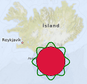

MapItemGroup QML Type
The MapItemGroup type is a container for map items. More...
| Import Statement: | import QtLocation 6.6 |
| Since: | QtLocation 5.9 |
- List of all members, including inherited members
- MapItemGroup is part of QML Maps Plugin.
Detailed Description
Its purpose is to enable code modularization by allowing the usage of qml files containing map elements related to each other, and the associated bindings.
Note: The release of this API with Qt 5.9 is a Technology Preview.
Example Usage
The following snippet shows how to use a MapItemGroup to create a MapCircle, centered at the coordinate (63, -18) with a radius of 100km, filled in red, surrounded by an ondulated green border, both contained in a semitransparent blue circle with a MouseArea that moves the whole group. This group is defined in a separate file named PolygonGroup.qml:
import QtQuick import QtPositioning import QtLocation MapItemGroup { id: itemGroup property alias position: mainCircle.center property var radius: 100 * 1000 property var borderHeightPct : 0.3 MapCircle { id: mainCircle center : QtPositioning.coordinate(40, 0) radius: itemGroup.radius * (1.0 + borderHeightPct) opacity: 0.05 visible: true color: 'blue' MouseArea{ anchors.fill: parent drag.target: parent id: maItemGroup } } MapCircle { id: groupCircle center: itemGroup.position radius: itemGroup.radius color: 'crimson' onCenterChanged: { groupPolyline.populateBorder(); } } MapPolyline { id: groupPolyline line.color: 'green' line.width: 3 function populateBorder() { groupPolyline.path = [] // clearing the path var waveLength = 8.0; var waveAmplitude = groupCircle.radius * borderHeightPct; for (var i=0; i <= 360; i++) { var wavePhase = (i/360.0 * 2.0 * Math.PI )* waveLength var waveHeight = (Math.cos(wavePhase) + 1.0) / 2.0 groupPolyline.addCoordinate(groupCircle.center.atDistanceAndAzimuth(groupCircle.radius + waveAmplitude * waveHeight , i)) } } Component.onCompleted: { populateBorder() } } }
PolygonGroup.qml is now a reusable component that can then be used in a Map as:
Map { id: map PolygonGroup { id: polygonGroup position: QtPositioning.coordinate(63,-18) } }
